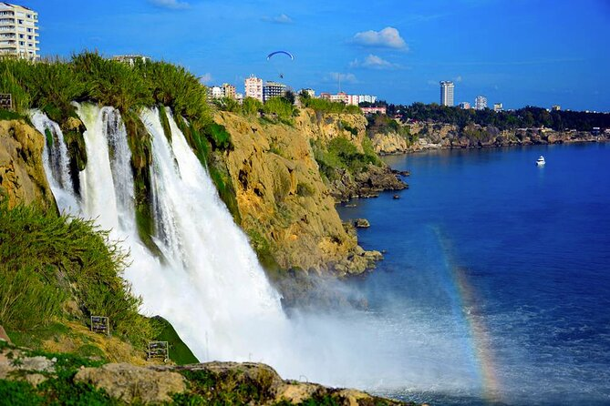

The Duden Waterfalls sit at the end of the river of the same name, which winds its way through the Taurus Mountains before tumbling from a cliff into a valley next to the Mediterranean. The falls consist of two cascades, and the upper part is nearly 50 feet (15 meters) tall and 65 feet (20 meters) wide.
